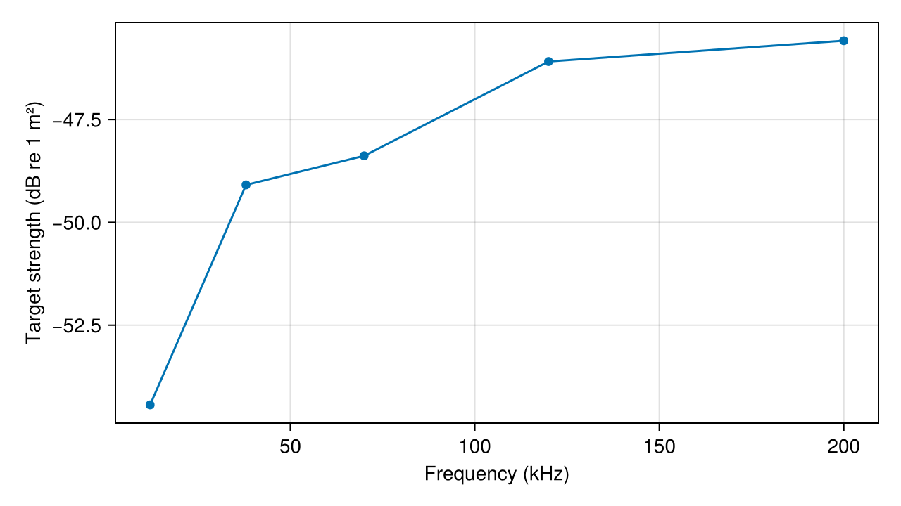

Getting Started
Install into a project environment, choose whether to run the optional precompile workload, and calculate rigid-sphere target strength. The current package requires Julia 1.10 or later.
Installation
Build prerequisites
The registered SpheroidalWaves 0.3.0 dependency compiles its Fortran backends during installation. Install CMake 3.15 or later, a compatible Fortran compiler, and a build tool before running Pkg.add. Put them on PATH so Julia can find them.
- On Ubuntu, install
cmake,gfortran, andmakewith your system package manager. The package CI installs these tools explicitly. - On Windows, use CMake and a matching MinGW-w64 toolchain providing
gfortranandmingw32-make. The dependency selects theMinGW MakefilesCMake generator. - Other platforms need a compatible native toolchain and supported dependency artifacts. They are not covered by the current Linux CI matrix.
Disabling the optional precompile workload does not skip this dependency build.
Install the package
For the current development version, install from the repository:
import Pkg
Pkg.activate("acoustic-example"; shared = false)
Pkg.add(url = "https://github.com/brandynlucca/AcousticScattering.jl")For a version available in your configured registry, use the normal package-name form:
import Pkg
Pkg.add("AcousticScattering")Pkg downloads dependencies and binary artifacts. Gmsh is provided through its Julia dependency, so you do not need to launch its graphical interface. Downloads require network access and a platform supported by the dependencies' artifacts. Current CI targets Linux. Availability on other systems depends on those artifacts too.
For the plotting tutorials, install CairoMakie in the same environment:
Pkg.add("CairoMakie")CairoMakie writes static figures without a display server. Plotting is optional for numerical calculations.
Precompilation: the default
Julia normally precompiles after installation. AcousticScattering additionally runs bent-cylinder and spheroid Kirchhoff examples through PrecompileTools to cache compiled code, not scattering results. This costs extra precompile time and cache space but reduces later first-call latency. The workload does not repeat on every ordinary package load when a usable cache exists.
An earlier Windows/Julia 1.12.1 measurement recorded roughly 130–145 seconds for the package precompile including these workloads. This is historical timing on one machine, not a guarantee. Dependencies, Julia version, source changes, and cache invalidation affect the cost.
Opt out before the first precompile
Add this to LocalPreferences.toml beside the active environment's Project.toml before installing. Merge it into an existing file, preserving any other settings:
[AcousticScattering]
precompile_workload = falseThis disables AcousticScattering's PrecompileTools workload. Normal Julia and dependency precompilation still occur. First use of the affected Kirchhoff paths may then spend time compiling. PrecompileTools already honors this preference, so no source edit or interactive installer prompt is necessary. PrecompileTools preference documentation.
Alternatively, use this Julia-only sequence. It postpones automatic precompilation and sets the preference without importing AcousticScattering:
import Pkg
Pkg.activate("acoustic-example"; shared = false)
withenv("JULIA_PKG_PRECOMPILE_AUTO" => "0") do
Pkg.add("Preferences")
Pkg.add(url = "https://github.com/brandynlucca/AcousticScattering.jl")
end
using Preferences: set_preferences!
set_preferences!("AcousticScattering", "precompile_workload" => false; force = true)
Pkg.precompile()
using AcousticScatteringwithenv restores the previous environment-variable setting. JULIA_PKG_PRECOMPILE_AUTO=0 alone only postpones precompilation: importing the package can still trigger the workload unless the preference is set. Julia Pkg precompilation documentation.
To re-enable the workload, set the preference to true, restart Julia, and run Pkg.precompile():
using Preferences: set_preferences!
set_preferences!("AcousticScattering", "precompile_workload" => true; force = true)Changing a compile-time preference can rebuild package and dependent caches. Set the preference in the environment you actually use.
First calculation
using AcousticScattering
radius = 0.01 # m
frequency = 38000.0 # Hz
sound_speed = 1477.4 # exterior fluid, m/s
wavenumber = 2pi * frequency / sound_speed # rad/m
solution = modal(Sphere(radius), Rigid(), wavenumber)
amplitude = scattering_amplitude(solution) # complex amplitude, m
strength = target_strength(solution) # dB re 1 m²
@assert isapprox(strength, -49.088291; atol = 1e-4)
(amplitude = amplitude, target_strength = strength)(amplitude = -0.002974772860981237 + 0.0018672516108134965im, target_strength = -49.08829084071884)The solver returns a ModalSolution. Use target_strength to extract its scalar result. Sphere backscatter is orientation-independent, so no incidence keyword is needed. See Conventions for normalization and Your first frequency sweep for a complete plotting workflow.
First plot
After installing CairoMakie, the following plots the same model at five frequencies:
using AcousticScattering
using CairoMakie: Figure, Axis, scatterlines!, save
frequencies = [12000.0, 38000.0, 70000.0, 120000.0, 200000.0]
strengths = [target_strength(modal(Sphere(0.01), Rigid(), 2pi * f / 1477.4))
for f in frequencies]
figure = Figure(; size = (640, 360))
axis = Axis(figure[1, 1]; xlabel = "Frequency (kHz)",
ylabel = "Target strength (dB re 1 m²)")
scatterlines!(axis, frequencies ./ 1000, strengths)
save("first_plot.png", figure)
The full tutorial uses finer sampling and demonstrates saving the data and figure.
Troubleshooting
- Slow first use: distinguish downloads, dependency precompilation, and the optional workload. Compare first and second identical calls within one session to identify compilation cost.
- Artifact/Gmsh failure: retain the error and Julia/platform versions, check network or proxy access, and run
Pkg.instantiate()in the active environment. - SpheroidalWaves build failure: check the build prerequisites above and the build log named in the error. After correcting the toolchain, run
Pkg.build("SpheroidalWaves")andPkg.precompile()in the active environment. - Headless cluster: use CairoMakie and
savefor static figures, as in the tutorial. - Unsupported combination: consult Choosing a solver. A material constructor does not imply support in every geometry and solver.
- Unexpected angle dependence: incidence and observation angles are distinct inputs. Review Conventions, especially for oblique axisymmetric BEM and MFS.